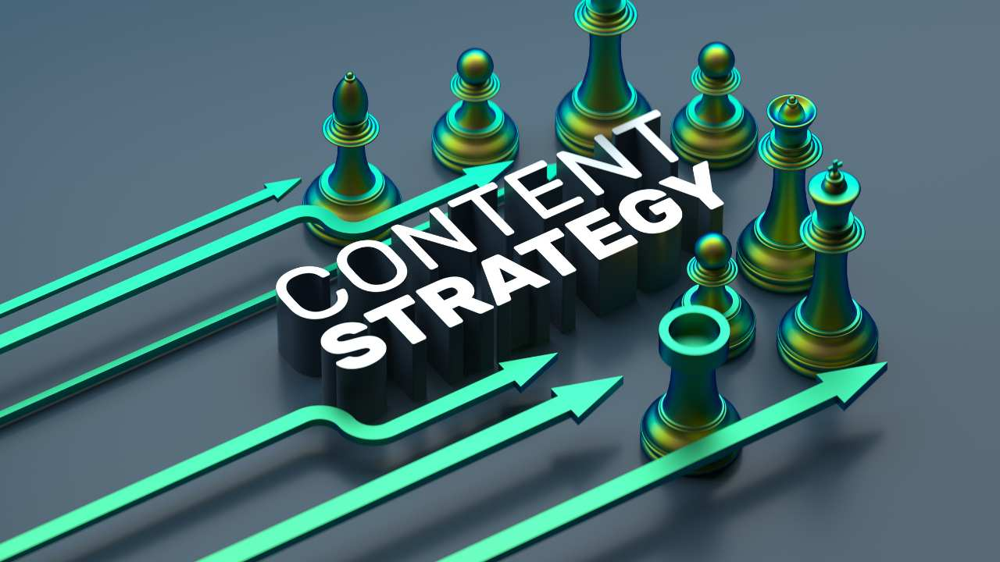

Content Marketing Strategies That Actually Drive Business Growth

Content marketing isn’t about publishing blogs and hoping they magically perform. It’s about building a repeatable system that attracts, engages, and converts the right audience using information they genuinely want.
Businesses with documented content strategies are 538% more likely to report success than those without one. Yet most companies still treat content as an afterthought instead of a strategic growth asset.
Understanding Your Target Audience (Beyond Demographics)
Knowing your audience’s age or job title isn’t enough. High-performing content is built on understanding real problems—what keeps your customers awake at 2 AM, what they’ve already tried, and why it didn’t work.
Interview 10–15 existing customers. Capture their exact language. When your headline mirrors their thoughts, attention is automatic.
Creating Valuable and Consistent Content
The “post daily or fail” myth is dead. One in-depth, genuinely useful article per week will outperform seven shallow posts.
- Teach something practical
- Help users make decisions
- Save time or money
Consistency means choosing a pace you can sustain for a year—not burning out in two months.
Content Distribution: Stop Spraying and Praying
Creating content is only 20% of the work. Distribution is the other 80%.
Choose channels based on where your audience already spends time. Master two platforms before expanding.
- Repurpose long-form content aggressively
- Email + one social platform beats six weak channels
- Guest content often outperforms owned blogs early on
SEO-Driven Content Planning (Done Right)
Modern SEO is about matching search intent—not gaming algorithms.
Find questions your audience is already searching. Create the most complete, actionable answer available. Structure content clearly, optimize for mobile, and focus on usefulness.
Storytelling and Brand Voice
Facts inform. Stories persuade.
Your brand voice should sound like how you explain your business at a dinner table—not a legal document. Share real customer stories, including failures and lessons learned.
Data, Analytics, and Performance Tracking
Vanity metrics don’t grow businesses. Track what matters:
- Engagement and time on page
- Email signups and downloads
- Assisted conversions
- Sales influence and lead quality
Ask not “how many views?” but “what happened next?”
Long-Term Strategy vs Short-Term Trends
Chasing trends is exhausting. Sustainable growth comes from evergreen content that compounds over time.
- 80% evergreen content
- 20% timely or trend-based insights
- Quarterly themes build topical authority
From Content Creation to Content Systems
Winning content marketing is systematic—not chaotic. Businesses that succeed commit to quality, consistency, and learning from performance data.
Your content should work like a sales team that never sleeps—attracting and nurturing leads even when you’re offline.
Final takeaway: Content is not a marketing expense. It’s a long-term growth engine when done strategically.
Get a Content Strategy Audit